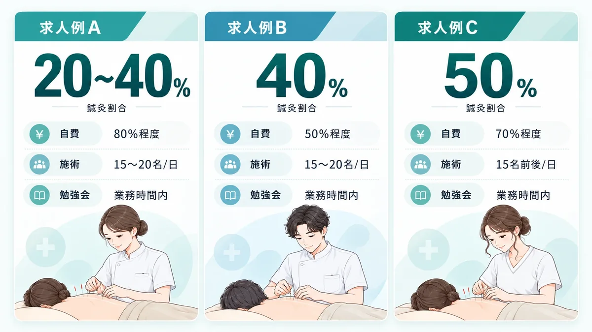

鍼灸師の転職、
「鍼灸割合」
まで見て選んでいますか？
同じ「鍼灸師募集」でも、
実際にどれくらい鍼を打つ職場なのかは同じではありません。
給与・休日だけでなく、
次は施術内容の中身まで見て選ぶ。
※求人状況・募集条件は時期・事業所により異なります。
鍼灸師として転職したのに、思ったより鍼を打てない職場だったら？
“鍼灸割合”まで見て職場を比べるのもアリだと思った。
同じ「鍼灸師求人」でも、
中身はかなり違う。
鍼灸師の転職で見ておきたい
「4つの中身」
給与や休日はもちろん大切。
でも、
次の職場で実際にどう働くかまで考えるなら、
次の4つも確認しておきたいポイントです。
- 鍼灸割合
- 自費診療割合
- 1日の施術人数
- 勉強会・研修の時間帯
① 鍼灸割合
「実際にどれくらい鍼灸施術を担当するのか」
同じ鍼灸師求人でも、
鍼灸施術の割合は職場によって異なります。
「もっと鍼を打ちたい」
「鍼灸師として経験を積みたい」
という人なら、
職種名だけではなく鍼灸割合まで確認する。
② 自費診療割合
「どんな施術スタイルの職場なのか」を見る材料
保険診療中心なのか、
自費診療にも力を入れているのか。
自費診療割合も、
職場の施術方針を知る一つの材料になります。
③ 1日の施術人数
毎日の仕事のペースを考える材料
1スタッフが1日に何人ほど施術するのか。
施術人数だけで働きやすさが決まるわけではありませんが、
自分が想定している働き方と合うか
を考える材料になります。
④ 勉強会・研修の時間帯
「学べるか」だけでなく「いつ学ぶか」
研修が充実していても、
毎回勤務後に残るのか、
業務時間内に行われるのかでは負担感が違います。
技術を学びたい人ほど、
研修内容＋実施時間まで確認しておきたいところです。
では実際に、
求人ごとにどれくらい違うのか？
実際の求人3例を比べてみる
国試黒本治療家エージェントの掲載求人には、
鍼灸割合まで具体的に記載されている求人があります。

※掲載求人の一例です。
※募集状況・仕事内容・割合等は求人ごとに異なり、変更・募集終了となる場合があります。
【結論】
同じ「鍼灸師募集」でも、
施術構成はここまで違う。
「鍼灸師の求人が何件あるか」だけでなく、
その求人で実際に何をするのかまで見ることが大切です。
こんな条件まで見て求人を探したい方へ▶希望に合う常勤求人があるか無料で相談する →
でも、ここまで全部自分で比べるのは大変
「求人を1件ずつ開いて、
全部確認するのは正直大変…」
求人を1件ずつ開いて、
- 鍼灸割合を確認
- 自費割合を確認
- 施術人数を確認
- 勉強会の時間を確認
- 気になる点を問い合わせ
転職活動をしながら全部やるのは、
正直かなり手間がかかります。
しかも、
公開されている求人ページだけでは
分からないこともあります。
そこで候補になるのが、
＼国試黒本治療家エージェント／
なぜ国試黒本治療家エージェント
なのか？
① 治療家の求人・転職に特化
柔道整復師・鍼灸師・あん摩マッサージ指圧師など、
治療家領域に特化した転職支援サービスです。
一般的な転職サイトではなく、
治療家ならではの仕事内容・キャリアを前提に相談できます。
② 求人票だけでは分からない情報も相談できる
公式では、
専任担当者が求人票には載らない職場の情報も把握したうえで
提案すると案内されています。
だから、
- 実際の施術内容
- 職場環境
- 勉強会
- キャリア
- 求人ごとの細かな条件
まで含めて相談しやすい。
③ そもそも求人情報の「粒度」が細かい
国試黒本の求人詳細には、
- 鍼灸割合
- 自費診療割合
- 1スタッフの施術人数
- 勉強会頻度・時間帯
- トレーナー業務
- 美容鍼
- 年間休日
などが掲載されている求人があります。
今回の「鍼灸割合まで見て選ぶ」という探し方と相性がいい。
④ 非公開求人もある
公開求人だけではない。
公開求人以外の
非公開求人が案内される場合もあります。
公開されている求人だけで探すより、
選択肢が広がる可能性があります。
⑤ 完全無料で相談できる
サービスの利用は無料。
「今すぐ絶対に転職する」
と決め切っていなくても、
次はどんな職場で働きたいのか
という条件整理から相談できます。
実際に利用した人の声
「そこまで細かい希望を伝えていいの？」
国試黒本治療家エージェントの公式サイトには、
就職・転職体験談が掲載されています。
口コミ①｜もっと鍼灸を打てる環境へ
希望したのは、
「より鍼灸を打てる環境」
担当者から、
鍼灸について深く学べる求人を案内してもらい、
その職場で学んでいるという体験談が掲載されています。
今回の「鍼灸割合まで見て選ぶ」にかなり近い利用例。
口コミ②｜自由診療に力を入れた職場を希望
希望したのは、
・自由診療に力を入れている
・鍼灸の知識・技術を身につけられる
という職場。
希望を伝えたうえで求人を案内してもらい、
面接まで進んだという体験談が掲載されています。
「自費割合や施術内容を条件として伝える」という使い方につながる。
口コミ③｜鍼ができて、自分の時間も持てる職場へ
転職理由は、
事務作業や雑務が増え、
就業時間が長くなったこと。
希望条件は、
・鍼ができる
・自分の時間を持てる
・資格を活かせる
細かな希望条件まで相談し、
転職先を探したという体験談が掲載されています。
※上記は国試黒本治療家エージェント公式サイト掲載の体験談を要約したものです。
※個人の体験であり、同様の結果を保証するものではありません。
▶自分も「何をしたいか」まで条件として伝える →└希望条件を無料で相談する
転職サービスだから、運営面も確認
国試黒本治療家エージェントの運営元は
株式会社エス・エム・エス。
公式サイトでは、
- プライバシーマーク
- 東証プライム市場上場
- 厚生労働省「適正な有料職業紹介事業者」認定
などが案内されています。
転職では個人情報を預けるからこそ、
サービス内容だけでなく運営体制も確認して選ぶ。
まとめ
鍼灸師の転職先は、「鍼灸師求人」という名前だけで決めない。
給与。休日。勤務地。
それだけでなく、
- 鍼灸割合
- 自費診療割合
- 施術人数
- 勉強会の時間帯
まで見る。
そして、
「次の職場で何をしたいか」を条件として伝える。
そこまで自分で調べるのが大変なら、
治療家専門の転職サービスに相談する方法もあります。
＼鍼灸割合まで見て転職先を探したい方へ／
無料で転職相談する※求人状況・募集条件は時期・エリアによって異なります。
※希望条件に合う求人の紹介を保証するものではありません。